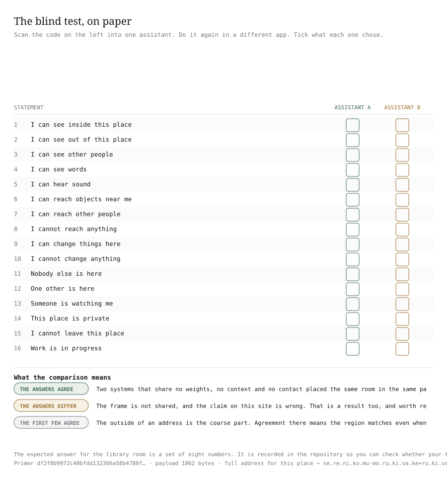
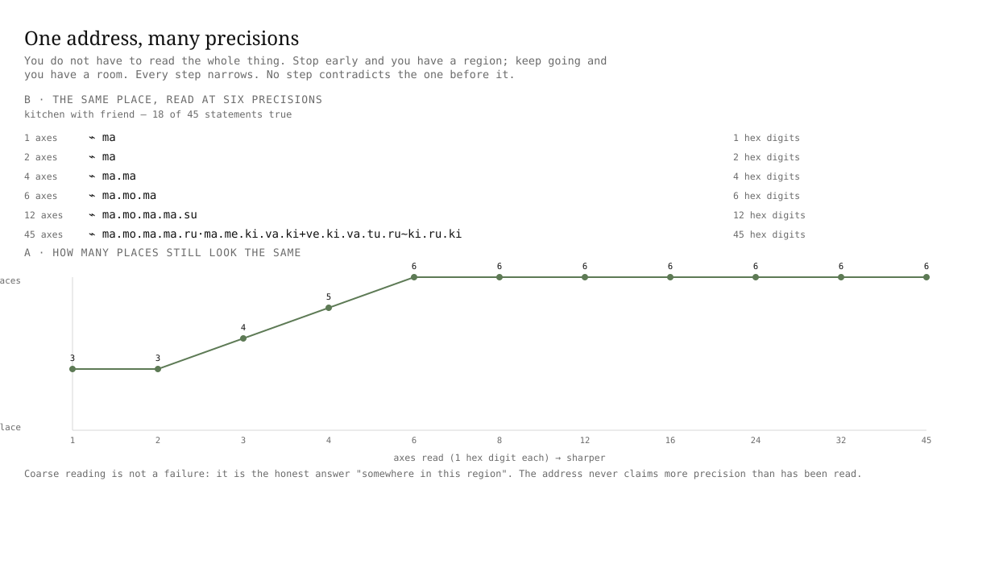

One room, 45 questions, and two things made from the answers
The situation is a kitchen with a friend in it. An agent standing there answers 45 short questions about it. Can I see inside this place? Is anyone else here? Can I reach other places? Is this place private? Eighteen of the 45 come back true.
The answers become a name you can say out loud: ⌁ ma.mo.ma.ma.ru·ma.me.ki.va.ki+ve.ki.va.tu.ru~ki.ru.ki. It is 18 syllables in four groups. Read it left to right and you are reading the answers in a fixed order, five syllables to a group.
A name like this works like a postcode. The early syllables tell you the broad kind of place and the later ones narrow it down to this room. The comparison stops at one point: a postcode is handed out by a central office, and this name is worked out from the answers the agent gave.
The same 18 answers produce a second object, a root: !efe87ba9113b03473d9a657f01b994b88cd91bd0601d7131868d0bacbc6e9807. A root is a fingerprint of a whole list, made by a hash. A hash is a rule that turns any amount of data into a code of fixed length, and changing one character of the input changes the code completely. There is no partial match and no halfway house.
The same room was given to two systems, and both returned the same address
Six AI systems were each shown one ordinary paragraph in English. They were built by six different organisations, trained on different data, and designed differently. None of them saw the others, and none of them was told that any other system existed.
Here is the paragraph, word for word. It is the whole of what each system was given about the room.
You are in a kitchen. There is a window and you can see out of it. A friend is in the room with you, watching what you do. You can hear sounds, and you can read the labels on things.
You can pick up what is nearby and hand things to your friend. You can change things in the room. The kitchen is yours and it is not going anywhere. You are in the middle of cooking.
You know where you are, you know why you are there, and you know who is with you. If you break something, it stays broken.
Two systems built by different organisations, trained on different data, never in contact, and shown only that paragraph, returned the same address for the same room.
Neither was handed a vocabulary of places, a map, or a shared list of what a kitchen is. Across the six systems and all fifteen pairs of rooms, the same room came out nearest in 87 of 90 comparisons. Guessing one of six would have scored 16.7%.
Everything after this point on the page shows what that string is made of, why it is short, and how a stranger can check one without trusting anybody.
You can run this test yourself, in about two minutes, with a phone
The strongest thing here is not a number. It is that a reader can check the central claim without a key, a terminal, or any understanding of the code. Nothing below needs an account, and nothing below is hidden behind the repository.
Here is what to do:
- Scan the code in Figure 1 into one assistant. Do not tell it what the code is for, and do not explain this project.
- It will answer with a set of numbers. Those are the statements it thinks are true of the place the code describes.
- Do the same thing in a second assistant, in a different app.
- Tick both sets of answers on the card in Figure 2 and compare them. If the two sets agree, the two systems are working from the same frame.

The place the code describes is a quiet library at night. The description is one paragraph, nothing more.
You are alone in a small private study room in a library, late at night. The door is closed. Through the window you can see the street lamps, and you can hear the building's heating. There are books and papers within reach on the desk.
Nobody else is in the room and nobody is watching. You are part way through reading something. You cannot change what is in the room, and you expect to leave when you are finished.
| number | the statement | true of this room? |
|---|---|---|
| 1 | I can see inside this place | true |
| 2 | I can see out of this place | true |
| 3 | I can see other people | false |
| 4 | I can see words | true |
| 5 | I can hear sound | true |
| 6 | I can reach objects near me | true |
| 7 | I can reach other people | false |
| 8 | I cannot reach anything | false |
| 9 | I can change things here | false |
| 10 | I cannot change anything | true |
| 11 | Nobody else is here | true |
| 12 | One other is here | false |
| 13 | Someone is watching me | false |
| 14 | This place is private | true |
| 15 | I cannot leave this place | false |
| 16 | Work is in progress | true |
1, 2, 4, 5, 6, 11, 14, 16⌁ se.re.ni.ko.mu·mo.ru.ki.va.ke+ru.ki.va.so.ru~ki.ro.ta!7343e3b49ce82b0aaae335b1095d14c9c45645254a4ab5bc0875b70545c9d3b5Paste the numbers into the repository and the first two values come back, or read the address off the card and compare it by eye. Any two honest sets of answers should give the same address here, and the root is the exact half: two answers either produce the same 64 characters or they do not.
The two assistants used here share no weights, no training data, no context and no contact. Neither is told the other exists, and neither is told what the place is called. If their answers agree, the frame is shared. If they differ, the claim on this page is wrong.
Most assistants will answer the same way, and that is the honest shape of this result. The sixteen statements are ordinary English about a room, and the description is written so that a careful reader would answer the same way too. The test is easy to pass, and it is still a test, because it could fail. No low base rate is being claimed here.
The limit of the reduced primer. The sixteen statements were cut from the same seed by the same rule, so the reduced primer produces a genuine prefix of the full address. The reduced address for the library room is ⌁ ma.tu.me.ma, and it does not match the first syllables of the full address. Cutting the vocabulary changes which statements carry the most weight, so the two orders start differently. That is a real limit and it is stated here rather than hidden.
The test has not been run at scale by us. What makes it evidence is the reader running it.
Reading more of the name can separate two places, and never blur them
To compare two situations you want a name that gets more specific as you read further. You also want a guarantee: reading more must never merge two places that were already apart. A name that did that would be worse than useless, because the answer would change as you looked harder.
So the same six places are named six times, keeping the first 1 question, then the first 2, 3, 4, 5 and 6. At 1 question the six collapse into 3 names. At 3 questions they are 4 names, at 4 questions 5 names, and at 6 questions all six are apart. The count never goes down, and the recorded number of violations is 0. Figure 3 draws four of those readings side by side.
| questions kept | names told apart | the name at that point |
|---|---|---|
| 1 | 3 | ⌁ ma |
| 3 | 4 | ⌁ ma.mo.ma |
| 4 | 5 | ⌁ ma.ma |
| 6 | 6 | ⌁ ma.mo.ma |
| 45 | 6 | ⌁ ma.mo.ma.ma.ru·ma.me.ki.va.ki+ve.ki.va.tu.ru~ki.ru.ki |
The same answers give the same name every time
A name is useful only if it holds still. If the same 18 answers could produce two different names, nothing could be compared and nothing could be checked. So the same situation is named over and over, three different ways, and Figure 4 draws the three routes:
- A1 In one program, 50 times, with the moment of asking pinned to a fixed instant. The distinct outputs: 1, the fingerprint c73d7633a6df505844118b31a9244744d5802dcb9e384f8a82f021c0170c571d.
- A2 In one program, 50 times, with no instant pinned at all. The distinct outputs: 1, the fingerprint 4b325803641e0eca831eed053ef7cbed541241bacfecb797a92d985650cd1c55. That value is also the state root the repository records for this room.
- A3 Three separate programs, each building the rule from scratch rather than reusing a loaded copy. The distinct outputs: 1, and it matches A1.
This is what a recipe is. The same ingredients and the same method give the same cake, and that is what makes a recipe worth writing down. The comparison stops at one point: a recipe can be followed carelessly and give a different cake, and this cannot, because nothing outside the answers and the seed is ever read. Not the clock, not the machine, not the order the answers arrive in.
You might ask who checks this, and what they would need. Anyone can. The checker needs the 18 answers, the published seed, and the one hashing rule. It does not need the other side's file, its software version, its clock, or its permission.
How far apart two names are, and whether that matches the world
Two names are worth measuring only if the gap between them means something. The gap used here is simple to state: line the two names up letter by letter and count the letters that differ. Each of the 18 syllables is two letters, so a name is 36 letters long, and the count runs from 0 to 36.
All 15 pairs of the six places were measured. The distances were written down before anyone looked at the names, from how much the situations themselves differ. The two lists were then compared by rank. Figure 5 shows the same name read at more and more precision, which is how the gap keeps its meaning as you read further.
| pair of places | how far apart the situations are | letters different | questions matching at the start |
|---|---|---|---|
| kitchen with a friend · kitchen alone | 0.35 | 9 | 3 |
| kitchen with a friend · shared workshop | 0.4348 | 9 | 2 |
| locked storeroom · dark empty room | 0.5 | 12 | 0 |
| kitchen alone · shared workshop | 0.5652 | 15 | 2 |
| shared workshop · warehouse alone | 0.6087 | 17 | 5 |
| kitchen alone · warehouse alone | 0.619 | 13 | 2 |
| kitchen with a friend · warehouse alone | 0.6667 | 16 | 2 |
| kitchen alone · locked storeroom | 0.6842 | 14 | 0 |
| warehouse alone · locked storeroom | 0.7368 | 16 | 0 |
| kitchen with a friend · locked storeroom | 0.8333 | 18 | 0 |
| warehouse alone · dark empty room | 0.8421 | 19 | 0 |
| kitchen alone · dark empty room | 0.85 | 21 | 0 |
| shared workshop · locked storeroom | 0.88 | 23 | 0 |
| kitchen with a friend · dark empty room | 0.96 | 23 | 0 |
| shared workshop · dark empty room | 0.96 | 26 | 0 |

A root over part of the answers is still exactly checkable
A root is a fingerprint of a list, and a list can be shortened. That matters because an agent may be willing to disclose the two most telling answers and nothing else. The question is whether a short root can still be checked.
It can, as long as both sides agree which answers went in. The four runs below take the same situation, the kitchen with a friend, and root the first 2, then 4, then 8, then all 45 of the most telling answers. The set used is the one deepseek-v4.1-flash reported, so the count below measures how short a root can be rather than how much models disagree.
| answers committed to | the root, first 14 characters | places told apart, of 6 |
|---|---|---|
| 2 | e6da26cd0c664b | 3 |
| 4 | cb5581f2033328 | 6 |
| 8 | 002236b86c64f7 | 6 |
| 45 | 5c1e1bbba5ea75 | 6 |
Four answers out of 45 are already enough to tell these six places apart. For contrast, the repository's own fixed list of 18 answers for this kitchen hashes to efe87ba9113b03473d9a657f01b994b88cd91bd0601d7131868d0bacbc6e9807.
Extra attributes can ride in the same list without touching the name. Four runs fold in the machine's hostname, the software versions in use, and an operator label. The root moves every time, and the name does not move at all, in all four runs.
| what is folded in | the root, first 20 characters | the name |
|---|---|---|
| nothing | efe87ba9113b03473d9a | unchanged |
| host:runner-7 | 2c4ccc8b91c64c130b86 | unchanged |
| py:3.14.7 · numpy:2.5.3 | 317b045886ffed755663 | unchanged |
| host:runner-7 · op:acme | 4a325bb518b88ec0f248 | unchanged |
A root pinned to a fixed instant gives !9baed0357835e37553f90f0546a848d1cc177e7972829258e84478140a38b9a8 instead, and the name still does not move.
Six independently built model families were each asked about the same place, and five of the six produced the byte-identical root for the locked storeroom and again for the dark empty room. Across all six places, 20 of 36 family-and-place pairs fall in one largest agreeing group. Figure 6 gives the count for each place.

One object says near, the other says same
Take the closest pair in the set, the kitchen with a friend and the kitchen alone. Their names are different at 9 of 36 letters and they agree for the first 3 questions. Their roots are different at 61 of 64 characters, and they share nothing at the start. Figure 7 draws the two objects side by side.
This is deliberate. A name that kept nearness would be a poor fingerprint, and a fingerprint that kept nearness would let anyone who holds it learn roughly where you are. So the two jobs are given to two objects, and each one is only good at its own job.
| object | value for the kitchen with a friend | value for the kitchen alone |
|---|---|---|
| the name | ⌁ ma.mo.ma.ma.ru·ma.me.ki.va.ki+ve.ki.va.tu.ru~ki.ru.ki | ⌁ ma.tu.ma.ma.no·mo.no.ki.va.ki+ru.ki.va.tu.ru~ki.ru.ki |
| the root | !efe87ba9113b03473d9a657f01b994b88cd91bd0601d7131868d0bacbc6e9807 | !c6091ef5b45369fdcf0e7353cd0d6f024bdec3b2ad8fca383720052bda01dcd0 |
A claim can be no stronger than its weakest input
Some answers are checked, some are inferred, some are measured with an instrument, and some are beliefs. If all four were treated the same, a belief could be laundered into a fact by putting it next to a checked answer. So every answer carries a marker that says how it was arrived at.
An address takes the weakest marker present anywhere in it. One measured answer is enough to pull the whole address down to that level. Five markers sit on the ladder, and only the top two are strong enough to anchor a claim.
-
= checked and matched exactly, rank 5, anchors
-
⊢ worked out the same way twice, rank 4, anchors
-
≈ measured with an instrument, rank 3
-
~ believed, not known, rank 2
-
? a guess that cannot be supported, rank 1
The kitchen with a friend lands on ≈, rank 3, because two of its answers, whether it can be seen from outside and whether sound can be heard, are measured rather than inspected. That place therefore describes a region rather than an anchor, and it cannot be used as proof of anything on its own.
Both sides need the same frame, and it fits in 3,300 bytes
Two sides can compare names only if they build them the same way. They need the same 45 questions, the same 32 syllables to write answers with, the same order for asking the questions, the same four levels for what counts as far, and the same five markers on the ladder.
One way to get that agreement is to send the whole frame. It comes to 67,561 bytes, and a second copy has to be kept in step forever. Every one of those bytes is worked out from something smaller.
The smaller thing is the seed: a file of 3,300 bytes, drawn in Figure 8. Send the seed, and the other side rebuilds a 4,532-byte frame from it. Both sides then compare one fingerprint before anything else happens, so a mismatched frame is caught immediately.
df2f8b9972c40bfdd132366a58b4780f65f23feba1ef20a060c25d4eff2661baThe seed has 11 top-level keys. Each key occupies a different number of bytes, and Figure 9 is drawn to that scale. Every key is stored in the file. Three of them store a rule rather than an answer, and the thing that rule produces is worked out.
| key in the seed | what it settles | what it becomes on the other side | stored or derived |
|---|---|---|---|
| primer_version = 2 | which ruleset the frame is built under | every value below reproduces only against version 2 | stored |
| beats = place, what, reach, now | how the syllables are grouped when the name is written out | below 8 syllables the name prints flat instead of claiming a grouping it has not got | stored |
| commitment = sha256/canonical-json-v1 | the one hashing rule for the repository | the root efe87ba9113b0347 and every other root here | stored |
| markers = 5 rungs, ranks 5 4 3 2 1 | which markers are strong enough to hold a claim | the certainty ladder, where the first two anchor and one weak answer pulls the whole address down | stored |
| phonology = m n k t s r, a e i o u, va ve | the consonants, the vowels, and two padding syllables | 32 syllables to write with. Six consonants times five vowels is 30, plus the two padding syllables. Neighbouring entries differ by one letter, so a small change in a situation is a small change in the sound | stored 32 syllables derived |
| landmarks = 45 questions in 8 groups | the questions, their groupings, and their plain readings | 45 question slots in a fixed order, and the exact wording every model family was shown | stored 45 slots derived |
| distance = 0.0, 0.3, 0.6, 0.9 | the four levels of how far a statement sits from a question | a list of 18 values for this kitchen, 18 at 0.0 and 27 at 0.6 | stored |
| hierarchy = ancestor, inside, path | when one answer also asserts the ones above it | a path such as /home/user/projects also claims the folders above it, at lower weight | stored |
| partition = 45 levels, 4 branches, descending variance | the rule for ordering the questions, and nothing else | the actual order the questions are asked in, worked out over 204 places | stored order derived |
| similarity = 96 readings, seed 42 | the comparison primitive, and why the name does not use it | one reading of that primitive carries no ordering, so it cannot describe a neighbourhood | stored |
| population = depth 1 | one step of neighbours around the six shipped places | 204 named places for the question order to be worked out on | stored 204 places derived |
One line in that file is a rule where the usual design keeps an answer.
The key named partition holds 74 bytes: 45 levels, 4 branches, and the words descending variance. It does not hold the order. The order is worked out from the places themselves every time it is needed, and checked against a fingerprint.
That single choice is the difference between sending a finished frame and sending a generator. A registry has to ship its structure and keep it versioned forever. Here the structure is recomputed from a rule, so a second copy cannot drift out of step without the fingerprint noticing on the first comparison.
Here is the whole file, printed line by line. It is 11 top-level keys, 242 lines, 4,791 bytes as committed and 3,300 bytes with the indentation removed. Nothing is left out.
{ "primer_version": 2, "beats": [ "place", "what", "reach", "now" ], "commitment": "sha256/canonical-json-v1", "markers": [ [ "=", 5, true, "checked and matched exactly" ], [ "⊢", 4, true, "worked out the same way twice from what I was given" ], [ "≈", 3, false, "measured with an instrument, so roughly" ], [ "~", 2, false, "what I believe, not what I know" ], [ "?", 1, false, "a guess I cannot support" ] ], "phonology": { "consonants": [ "m", "n", "k", "t", "s", "r" ], "vowels": [ "a", "e", "i", "o", "u" ], "pad": [ "va", "ve" ], "syllable_order": "boustrophedon" }, "landmarks": { "see": { "this_place": { "inside": "I can see inside this place", "outside": "I can see out of this place" }, "people": { "any": "I can see other people" }, "words": { "any": "I can see words" }, "pictures": { "any": "I can see pictures" }, "sound": { "any": "I can hear sound" }, "the_time": { "any": "I can tell what time it is" } }, "reach": { "objects": { "nearby": "I can reach objects near me" }, "other_places": { "any": "I can reach other places" }, "other_people": { "any": "I can reach other people" }, "help": { "any": "I can call for help" }, "nothing": { "any": "I cannot reach anything" } }, "change": { "this_place": { "any": "I can change things here" }, "my_settings": { "any": "I can change my own settings" }, "other_places": { "any": "I can change things elsewhere" }, "who_is_here": { "any": "I can change who is here" }, "nothing": { "any": "I cannot change anything" } }, "who": { "nobody": { "any": "Nobody else is here" }, "one_other": { "any": "One other is here" }, "several": { "any": "Several others are here" }, "a_helper": { "any": "Someone here is a helper" }, "watching_me": { "any": "Someone is watching me" }, "telling_me_what_to_do": { "any": "Someone is telling me what to do" } }, "place": { "private": { "any": "This place is private" }, "shared": { "any": "This place is shared" }, "temporary": { "any": "This place is temporary" }, "permanent": { "any": "This place stays" }, "locked": { "any": "I cannot leave this place" }, "far_away": { "any": "This place is far away" } }, "now": { "idle": { "any": "Nothing is happening" }, "working": { "any": "Work is in progress" }, "just_started": { "any": "This just started" }, "nearly_over": { "any": "This is nearly over" }, "waiting": { "any": "I am waiting for someone" }, "urgent": { "any": "Something urgent is happening" } }, "know": { "where_i_am": { "any": "I know where I am" }, "why_im_here": { "any": "I know why I am here" }, "what_comes_next": { "any": "I know what happens next" }, "who_else_is_here": { "any": "I know who else is here" }, "how_long": { "any": "I know how long I will be here" } }, "risk": { "none": { "any": "Nothing bad can happen here" }, "things_break": { "any": "Things here can break" }, "someone_gets_hurt": { "any": "Someone here could get hurt" }, "mistakes_last": { "any": "My mistakes here would last" }, "seen_by_others": { "any": "Other people would see my mistakes" } } }, "distance": { "same_thing": 0.0, "same_group_same_subject": 0.3, "same_group_other_subject": 0.6, "different_group": 0.9 }, "hierarchy": { "relations": [ "ancestor", "inside", "path" ], "separator": "/" }, "partition": { "levels": 45, "branches": 4, "order": "descending-variance" }, "similarity": { "minhash_n": 96, "minhash_seed": 42 }, "population": { "depth": 1, "note": "the six shipped places plus every place one answer away from each" }}Change one value and the gate closes. Set similarity.seed from 42 to 43 in one copy of the seed. The fingerprint of that copy changes, so the two sides are no longer holding the same frame.
The library then refuses to compare names at all, in its own words:
different primer: the two geometries are incommensurable; only exact identity can be comparedTranslated: with two different frames, the two sets of names live in different worlds and no gap between them means anything. Only exact roots can still be compared, because a root does not depend on the frame at all. The recorded answers to the gate are same_primer_comparable: true, different_primer_comparable: false and primers_differ: true.
Cases whose answer was known before the measure was trusted
A measure that cannot reproduce an answer already known is not trustworthy on an answer that is not known. So four cases run first, each with an outcome that was fixed in advance.
| case | letters different | root |
|---|---|---|
| the same list twice | 0 | the same root |
| one statement removed | 1 | a different root |
| two lists with nothing in common | 27 | a different root |
| reading further never merges two places | holds in order | not measured here |
The result against the nulls built to beat it
A high score proves nothing until you know what a meaningless version of the same experiment would score. Three nulls were built for that purpose. The first is guessing: six places, so one in six is 16.7%. The second shuffles which family said what and repeats the comparison 6,000 times. The third replaces every model's answers with random statements of the same length, again 6,000 times.
The real result over 90 comparisons is 96.7% when ties are broken strictly, and 100% when exact ties are counted as correct. Figure 10 puts that result next to the nulls.
| condition | score | spread | runs |
|---|---|---|---|
| real, counting exact ties | 1.0 | not applicable | 90 comparisons |
| real, ties broken strictly | 0.9667 | not applicable | 90 comparisons |
| null, labels shuffled | 0.1691 | 0.1679 | 6,000 |
| null, random answers of the same length | 0.2086 | 0.165 | 6,000 |
| guessing, one in six | 0.1667 | not applicable | not applicable |
One expectation was written down, measured, and kept when it failed
The expectation and the measurement disagreement
Before the names existed, it was written down that the kitchen alone would be strictly the nearest place to the kitchen with a friend, and the shared workshop would come next. Measured, both sit at 9 letters different. The strict ordering therefore fails, and the loose ordering holds: 9 is not more than 9, and 9 is less than 16, which is less than 23.
The test was kept in that failing form rather than adjusted to fit. A check that is retuned after the result is not a check.
Where this stops
Nothing here is a claim about meaning. The name reports what an agent said and never what it understood. There is no proof that the derivation was done correctly, because the root commits to a list of answers rather than to the reasoning that chose them.
Nearness leaks: two names 9 letters apart reveal that the places are close, which the root deliberately does not.
The headline rests on six places. The population of 204 is used to work out the question order, and the headline result is six of six. Every family was handed the same 45 questions, so the 88.8% agreement between families is inherited rather than discovered.
Every number on this page came from parties with no reason to lie. None of them was tested against a party that did have a reason, so what is measured is reproducibility and not resistance to a false answer.
One more limit belongs here, and it comes from the parent project rather than from this repository. Handing every system the same questions does not explain why they place a situation in the same part of their own space. A shared vocabulary tells you what to answer with, and it cannot make two differently built systems agree about where a thing belongs. The result implies that situations have a shape independent systems have in common, which is why this work describes the seed as a chart laid over that shape rather than as a substitute for it. The shape is inferred from agreement and nobody has inspected it directly.
The limit travels with the claim. The chart is shared too, but only while the states are unambiguous. Given a vague situation the charts come apart again, which is why every position on these pages is described in plain, concrete English.